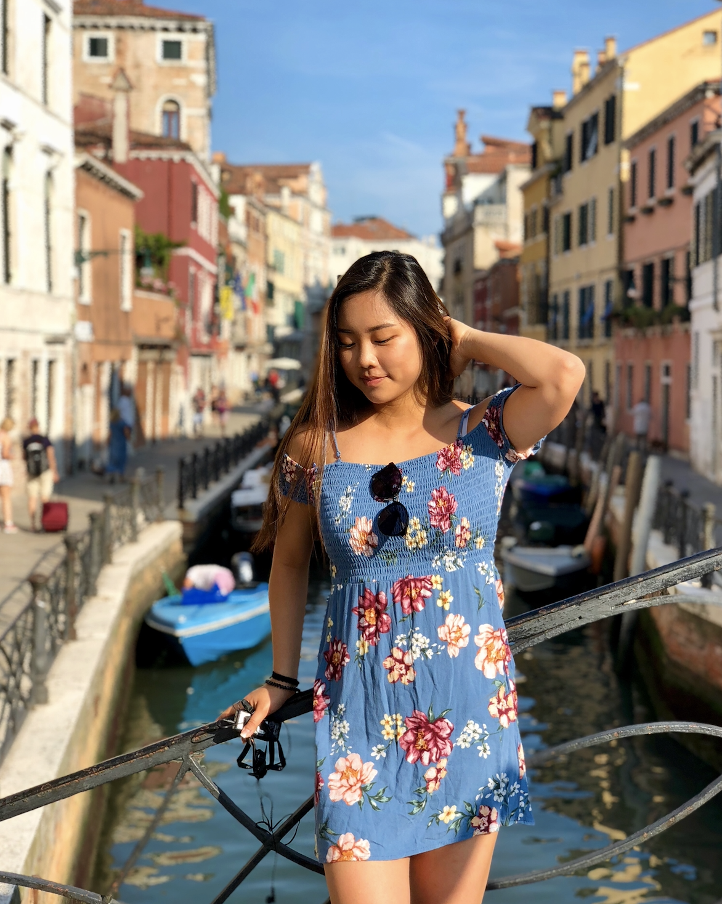

Inwoo Cho

Hi! I’m a sophomore at the University of Michigan studying Public Health. I decided to take Amcult 352 because I wanted to learn more about APIA culture and communities on campus. Although I’m not directly involved in any APIA orgs on campus right now, I identify as Korean-American and have many friends involved in different orgs, so I wanted a greater breadth of knowledge on the topic.
On Korean Culture:
Although I was born in South Korea, I moved to North America when I was one, so I grew up very Korean-American. I lived in a city with many Koreans, so I never felt completely out of touch with my roots, but I definitely grew up feeling more “American” than “Korean.” Growing up, I knew of Korean culture to be Korean food (which I hated when I was younger) and speaking Korean (which I also disliked). After visiting Korea a few times growing up, I came to associate Korean culture with being very conservative, city life, plastic surgery, and K-pop. In all honesty, modern Korean culture does consist largely of these things; the plastic surgery, dermatology, and other beauty industries dominate the streets of Korea, and K-pop is what many non-Koreans view Korean culture as. Korea only modernized as a country around 50 years ago, so the emphasis placed on modern culture is rightfully done so, with the “work hard play hard” motto. Norebangs (Karaoke), clubs, bars, restaurants, and beauty stores line the large and popular cities in Korea. Korean work life stretches over long hours, and breaks are rare, but everyone still finds time to “play hard.” The Korean lifestyle moves fast, efficiency is praised, and aesthetics are critical.
Elena Fang
I’m currently a sophomore at the University of Michigan studying Information. Because my Taiwanese ethnicity is such a crucial part of my identity and because I have been more heavily involved with TASA this past year, I really wanted to use this project to delve into how this community has solidified my identity and how it may have impacted others as well.
On Taiwanese Culture:
I was born in Ann Arbor and have lived here my entire life, so I’ve never actually spent extended periods of time in my parents’ home country. However, my parents made it a point to visit often throughout my childhood so that I would be able to get to know my extended family and become more well versed in Taiwanese culture. Although I did grow up surrounded by predominantly white people, I was always very conscious of my Taiwanese identity and did my best to embrace it by speaking my parents’ native tongue at home as well as going to Chinese School on a weekly basis up until my senior year of high school. In addition, my family has always done very traditional Taiwanese activities and some of my fondest memories have been the ones where we sit around the table and “bao jiao zi”, which means fold dumplings. Going to Taiwan always meant anticipating going to the night markets and eating all my favorite foods, such as bawans, lu rou fan, and more. Every Christmas, instead of typical Christmas festivities, my family plays a full round of mahjong which can go on for hours and hours. While my brothers might not have always been the fondest of the game, it meant that we got to spend time together as a family. I personally became involved with TASA this past year and was able to find a second home on campus. Being a part of TASA also allows me to actively spread my culture with the foods I ate and activities I participated in growing up with the rest of campus. The fact that the organization emphasizes “family” and “community” while hosting these types of “homey” interactive events feels really aligned with my identity and where I came from.